第27天：汇编器的语法分析之代码实现
第27天：汇编器的语法分析之代码实现
上一节我们构造了汇编器的文法，这一节我们就根据产生式来写代码。
如何获得下一个token
1 | |
__ass_next_token 这个函数实现词法分析，每调用它一次就会得到一个词法记号。
第 3 行，先得到一个词法记号。
第 4~7 行，如果是注释或者是无效符号，就忽略，继续得到下一个词法记号。
第 8 行是把当前的词法记号存入队列，方便做语法上色或者打印输出等，这不是重点，不必懂。
第 9 行把当前的词法记号返回给调用它的函数。
先介绍几个宏：
1 | |
第 1 行，判断当前符号是不是 x；
第 2 行，调用刚才讲的 ass_next_token 函数，得到新的词法记号。这样写可以少写一个参数。
第 3 行，需要解释一下 ass_match 函数；
1 | |
这个函数的作用是：判断参数 need 和当前的词法记号（scanner->token）是不是一致，一致则取下一个词法记号并返回 true，否则什么也不做，返回 false；
对换行的处理
前面我们说过，汇编中的换行有结束当前指令的功能。
下面的函数完成一个换行符或者连续多个换行符的匹配。
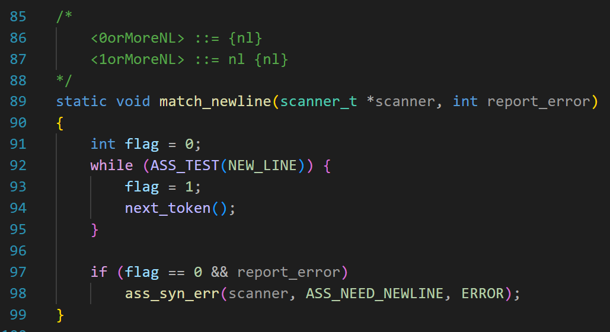
第 92 行，如果当前词法记号是换行，则继续取下一个词法记号，直到遇到的不是换行为止。
第 97 行，如果一个换行都没有，则根据参数 report_error 的值选择报错或者沉默。
把这个函数包装一下，又有 2 个宏
1 | |
第 1 行的意思必须匹配到至少一个的换行，否则就报错；
第 2 行的意思是能否匹配换行不重要，重要的是把换行（如果有的话）都“吃掉”；
入口函数
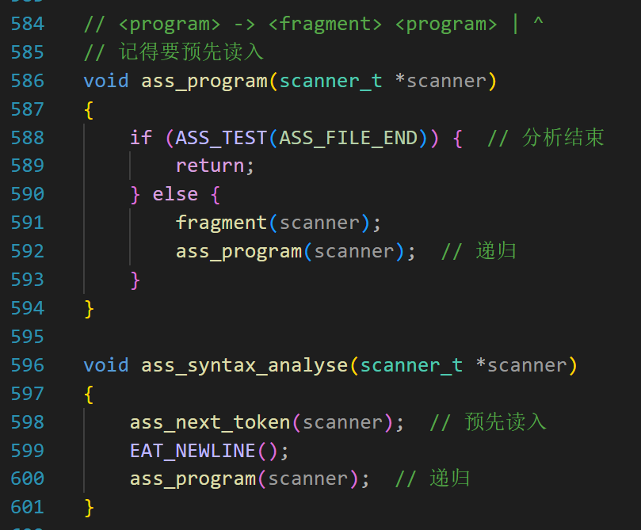
第 596 行就是语法分析的入口函数了；
第 598，读入第一个词法记号（后文中叫 token）；
第 599 行，吃掉一个或多个换行（如果有的话）；
第 600 行，调用 ass_program；
我们看看 ass_program 函数，这是一个递归。
第 588 行，如果遇到文件结束就返回，这是递归的出口。
第 591~592，根据 584 行的产生式，先调用 fragment，解析一条声明或者指令， 然后调用 ass_program（递归）
fragment
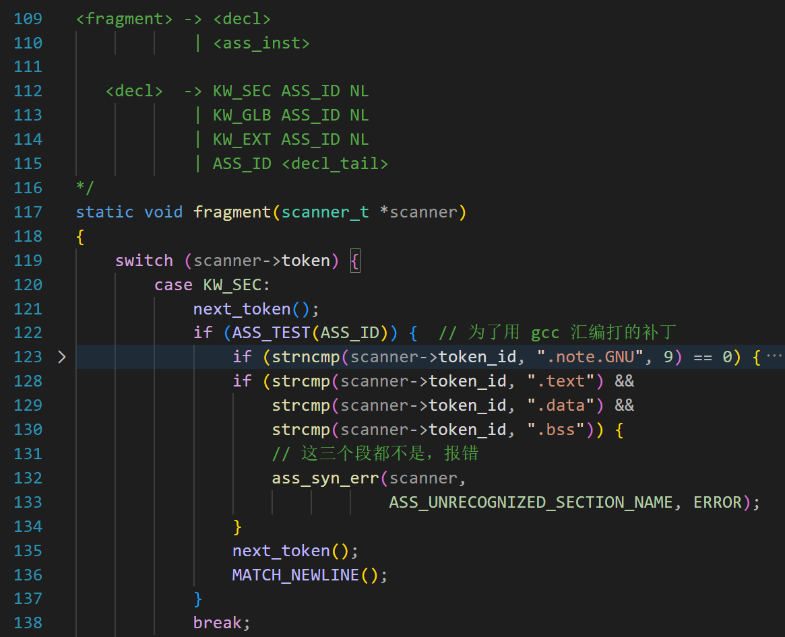
fragment 函数的产生式已经写在注释里了，方便读者对照。
根据产生式，当前的 token 逃不过下面几种
1、section
2、global
3、extern
4、标识符
5、指令助记符
那我们就一个一个来。
第 123 行，折叠的部分是为了跳过
1 | |
在使用 nasm + gcc 验证我们生成的汇编代码的时候，假设 cusb 把 test.c 编译为 test.asm;
当使用 gcc 链接 test.o 和其他文件的时候，有警告
missing .note.GNU-stack section implies executable stack
给 test.asm 加上这句话就不会产生警告了。
但是我们的汇编器功能有限，实在是没有能力解析这句话，只好全部跳过，就当看不见。
我们支持的段只有 3 个 .text 和 .data 和 .bss(虽然现在没有生成这样的段，后面可能会加上)
第 128 行比较标识符和这三个标准段名，如果都匹配不上就报错。
毕竟我们对汇编器的要求不高，所以没有做错误恢复，只要能正确识别我们的 .asm 就好。
第 135 取下一个 token，应该是换行。
第 136 检查到底是不是换行。
继续看代码。
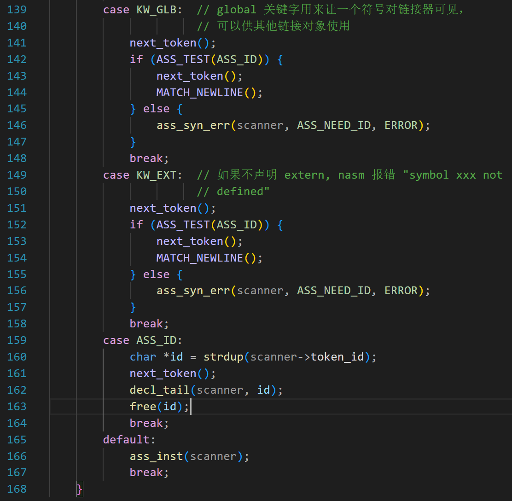
139 和 149 是对 global xxx 和 extern xxx 的处理，它们的后面都需要一个标识符，如果不是就报错;
第 159 行，解析产生式 ASS_ID <decl_tail>
第 160 行，拷贝标识符的字符串到 id
strdup 是 POSIX 标准 而非 C 标准库（ANSI C）中的函数;
函数原型是 char *strdup(const char *s);
先为参数字符串s分配一块新的内存空间，然后将s的内容复制到新分配的内存中，最后返回指向新字符串的指针;
第 162，调用 decl_tail，马上会讲。
如果不属于
1、section
2、global
3、extern
4、标识符
那应该是指令助记符，执行第 165 行，调用 ass_inst 解析指令;
decl_tail函数
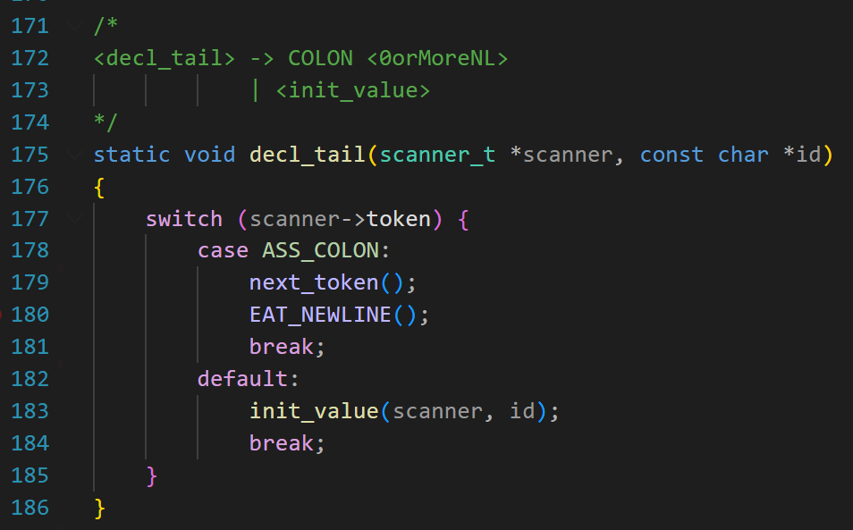
根据第 172 行的产生式，要么是冒号，要么是 <init_value>;
因为冒号后面可以没有换行，所以第 180 行用的是 EAT_NEWLINE;
需要说明的是，对于数据的定义，标识符后面也可以加个冒号。
例如
1 | |
不过 csub 生成汇编代码的时候，没有加这个冒号。
所以，遇到带冒号的标签，肯定是代码段的标签。
init_value函数
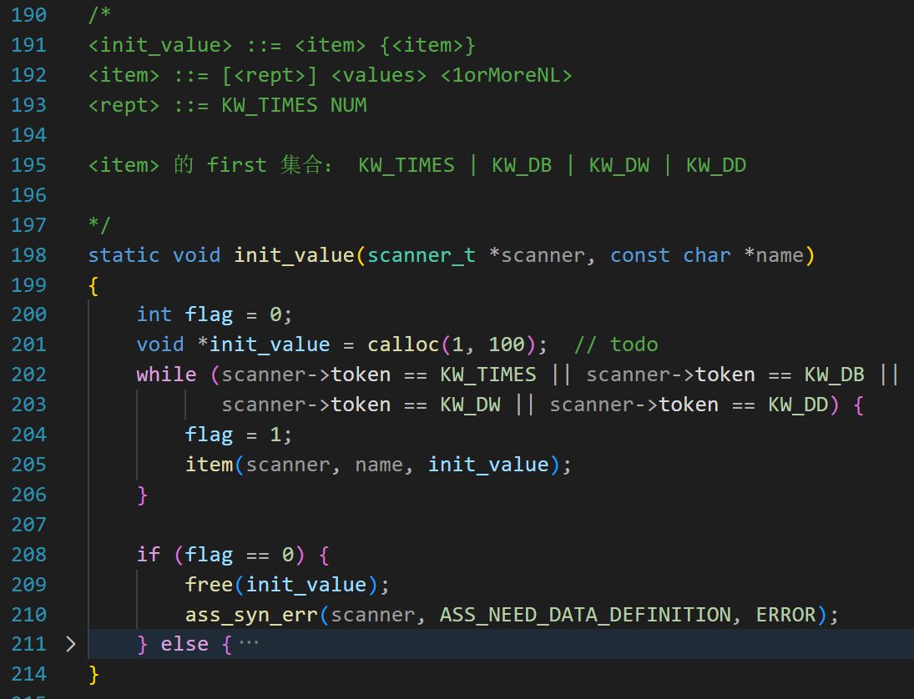
<init_value> 由一个或多个 <item> 组成。
<item> 的 first 集合很好求，就是第 195 行我写的注释。
第 202 行，判断当前 token 是不是在 <item> 的 first 集中，如果是，就调用 205 行的函数 item()
第 200 行的 flag 是一个标记，标识 while 循环有没有进去过，如果压根就没有进去，那说明缺少数据定义，第 210 行会报错。
需要说明的是，这不是最终的代码，为了突出语法分析，我删了很多代码。
第 201 行，分配了一片内存（分配 100 字节仅仅是举例子），item 解析到的 value 都拷贝到这片内存中。
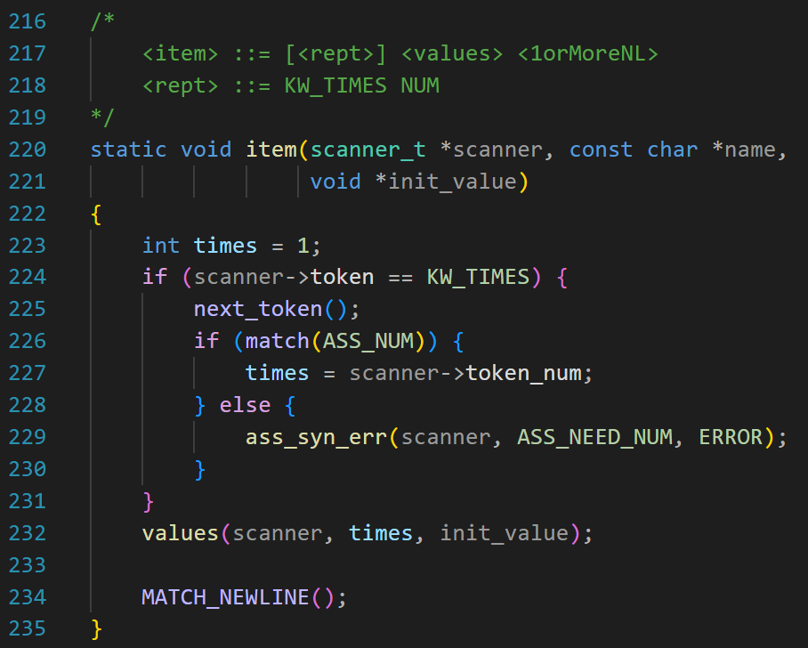
第 224 行，判断是不是 times 关键字，如果是说明有 times xxx;
第 232 行，解析非终结符 <values>
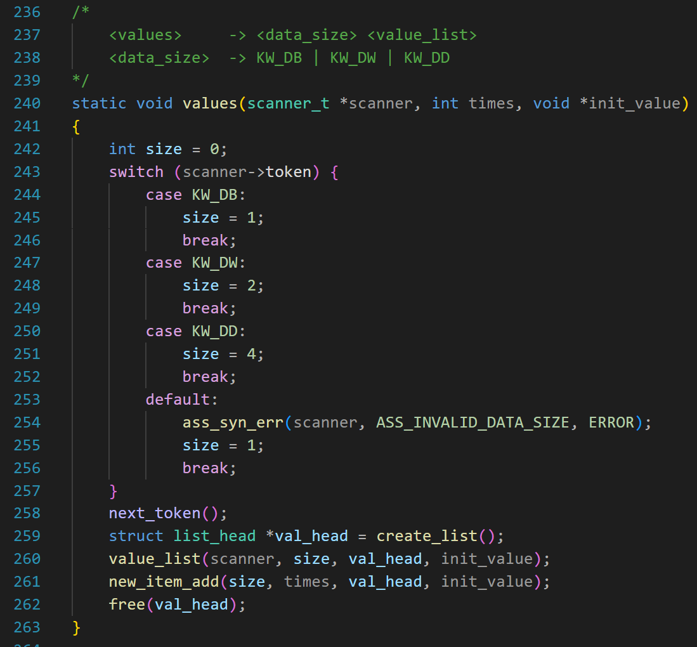
第 243 ~ 252 解析 <data_size>
第 259 行，创建一个空的链表
第 260 行，解析 <value_list>, 并且把 size、链表的头节点 val_head 和 init_value 作为参数，传给 value_list 函数
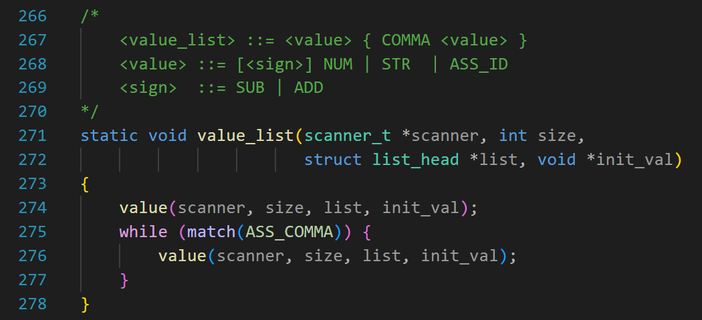
value_list 至少有一个 <value>
后面可能有 0 个或者多个 “COMMA <value>”
所以第 275 行用 while 循环匹配逗号;
这里可以给读者展示一下用 “教科书式 CFG 写法” 和 “EBNF” 写法在编码的时候有何不同。
如果用教科书式 CFG 写法，产生式和代码是下面这样
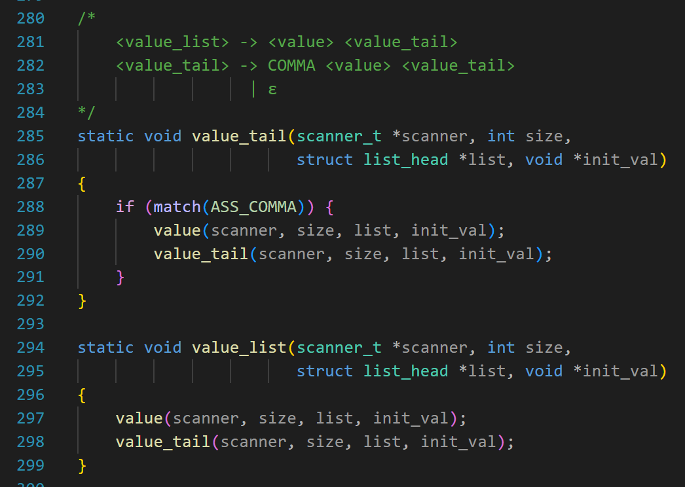
可以看到，针对这个例子（解析 <value_list>），“EBNF” 写法在编码的时候用 while 循环取代了递归，而且一个函数就搞定。这也算是 “EBNF” 写法的一个优点。
下面看 value 函数:
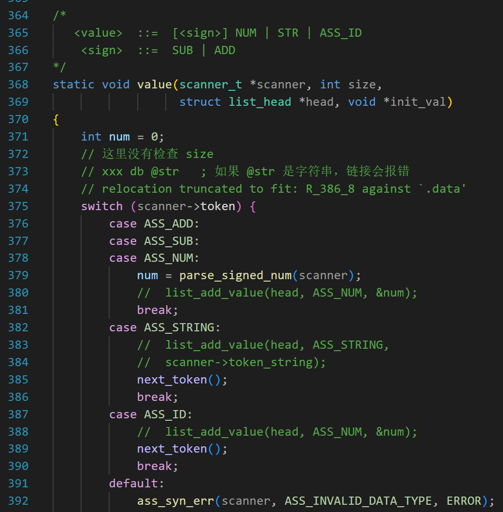
第 380、383、383 的 list_add_value 函数里会申请内存，保存每个值，再把值作为节点挂在链表上。
但是我都注释掉了，因为 list_add_value 函数里面要申请内存，所以还要有对应的释放内存的代码，这又会牵扯到符号表等一大堆和本文主旨无关的代码，所以先注释掉；
只要读者明白解析出的每个值要保存起来就行。
parse_signed_num 的作用是解析数字（前面可以有正号、负号），这个函数很简单，按下不表。到了这里，对数据定义的解析就完成了。
解析汇编指令
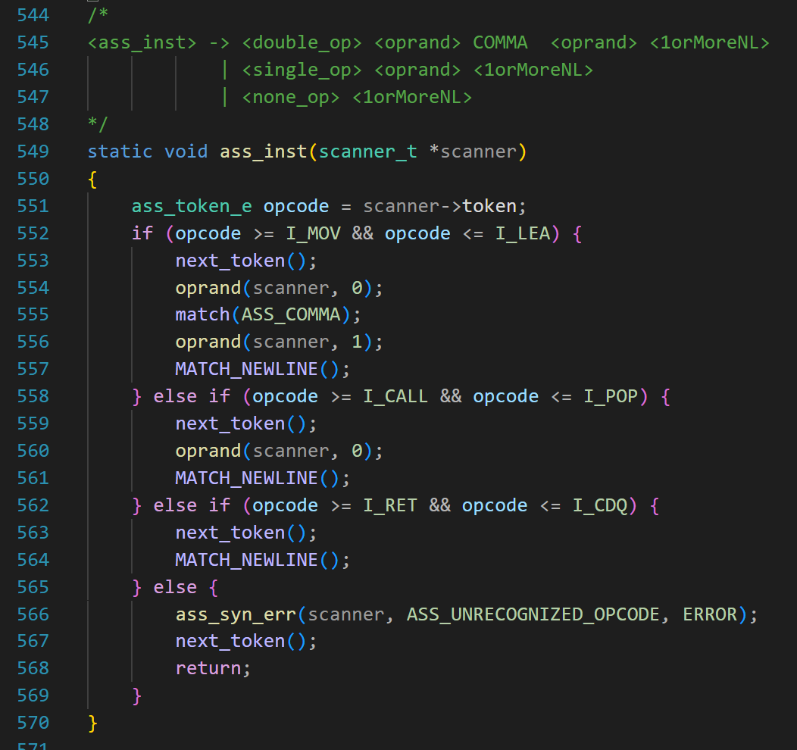
第 552 行，判断 token 是不是双操作数指令，如果是，第 554 行和 556 行，调用 oprand 函数解析操作数。
同理，其他 2 个 else if 分支是解析单操作数指令和无操作数指令。
oprand()函数用来解析操作数。
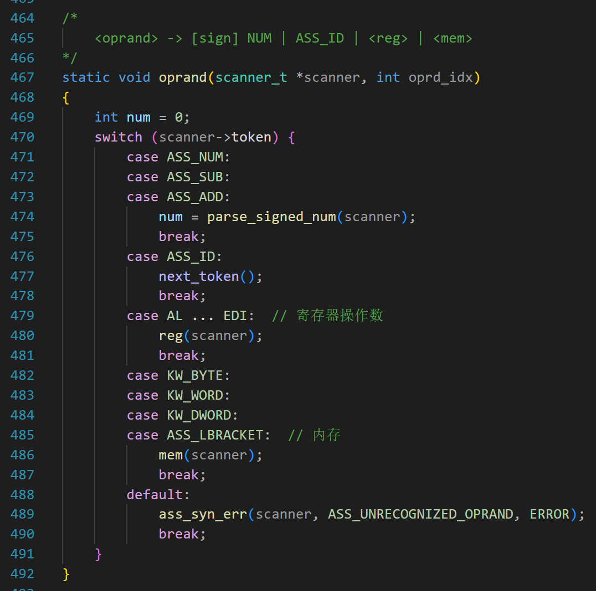
第 480 行的 reg() 很简单，不赘述。
我们重点看第 486 的 mem()，用来处理内存操作数。
因为有下面的产生式
1 | |
所以 <mem> 的 first 集合是 KW_BYTE | KW_WORD | KW_DWORD | ASS_LBRACKET
这就是代码 482~485 行的意思，罗列出所有可能的 token；
我们看看 mem 函数
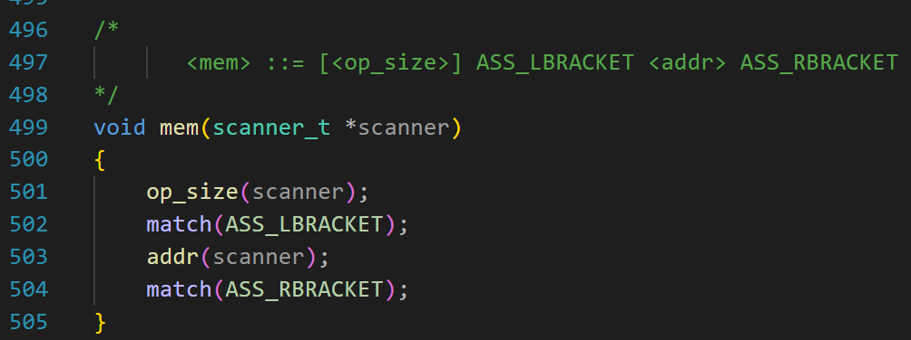
注意，产生式里面的 [] 表示 0 个或 1 个，不要和指令中内存操作数的方括号混淆。
指令中内存操作数的方括号用 ASS_LBRACKET 和 ASS_RBRACKET 表示。
op_size 很简单，就不贴代码了。
我们看 addr
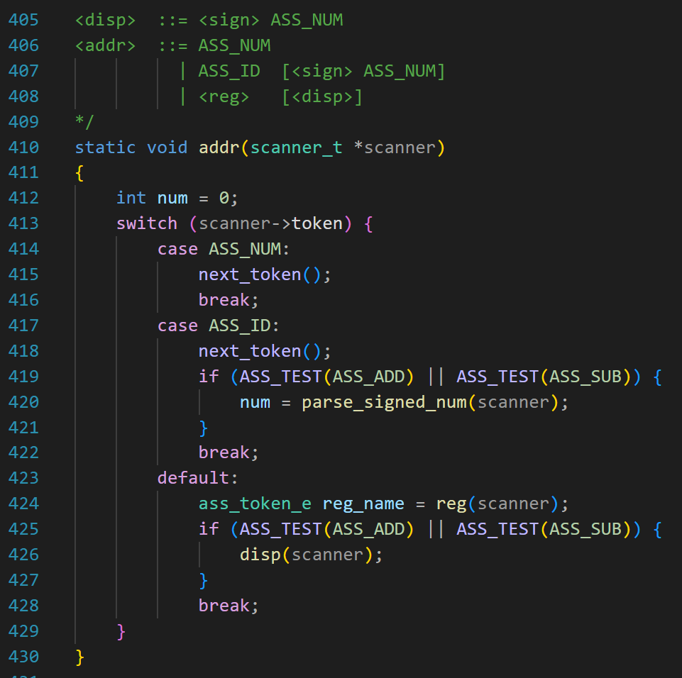
第 414 行，地址可以是一个数字，这是绝对地址寻址，也有叫直接寻址的。
第 417，地址可以是标识符，标识符后面可以有偏移，也可以没有。
注意，第 426 的 disp() 在本质上和第 420 行的 parse_signed_num() 一样。
因为 disp 调用了 parse_signed_num
1 | |
我之所以给 parse_signed_num 外面封一层叫 disp，是为了强调 “基址+偏移寻址” 中的 “偏移”
到这里，汇编器的语法分析就完成了。还是比较简单的，因为产生式不多，而且也不复杂。
下节课我们学习汇编器的符号表。